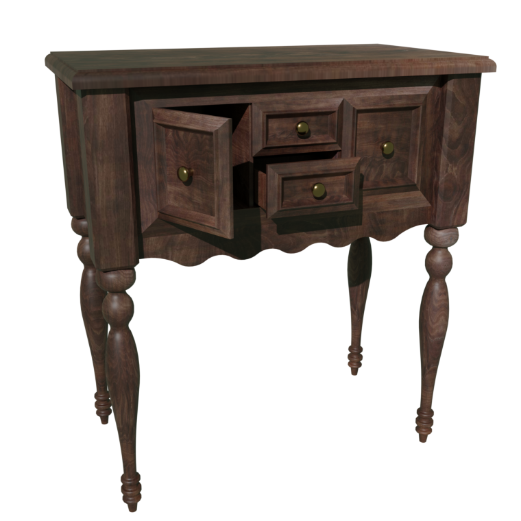
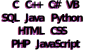

Welcome to my portfolio website! Here, you'll find examples of my 3D modeling and rendering work, as well as
my Unity game development, programming, and website development skills.
As a 3D artist, I take pride in creating realistic and eye-catching models that capture the essence of their
real-life counterparts. Whether it's creating characters, environments, or objects, I love bringing my imagination to life in 3D.

I'm also proficient in 3D rendering using Blender. With its powerful tools and intuitive interface, I'm able to
create stunning 3D scenes that can be used for anything from architectural visualizations to product designs. I take great care in every
aspect of the rendering process, from lighting and texturing to compositing and post-processing.
In addition to my 3D skills, I'm also well-versed in Unity game development. From creating complex game mechanics
to designing immersive worlds, I'm passionate about using technology to create unforgettable gaming experiences.
As a programmer, I enjoy solving complex problems and creating efficient and user-friendly software. Whether it's
writing code in Python, C++, or JavaScript, I take pride in delivering high-quality solutions to any project.
Finally, I'm experienced in website development, crafting beautiful and responsive websites that are tailored to my
clients' needs. Whether it's designing a brand new website from scratch or optimizing an existing site, I always strive for excellence in everything I do.
Thank you for taking the time to visit my website. I hope you enjoy exploring my portfolio and learning more about my
skills and expertise.